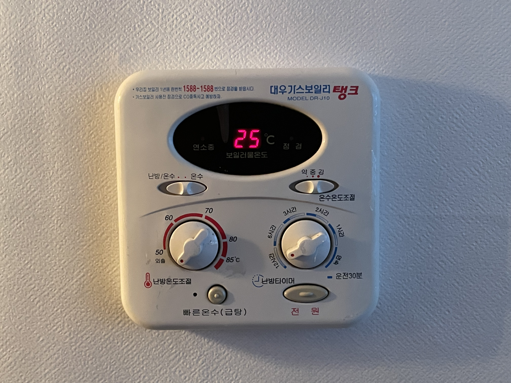
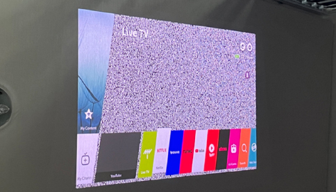
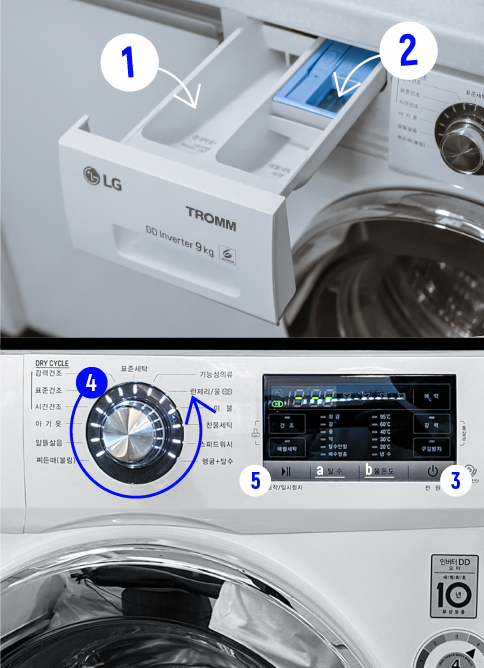
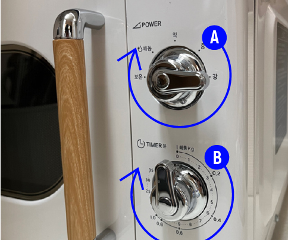
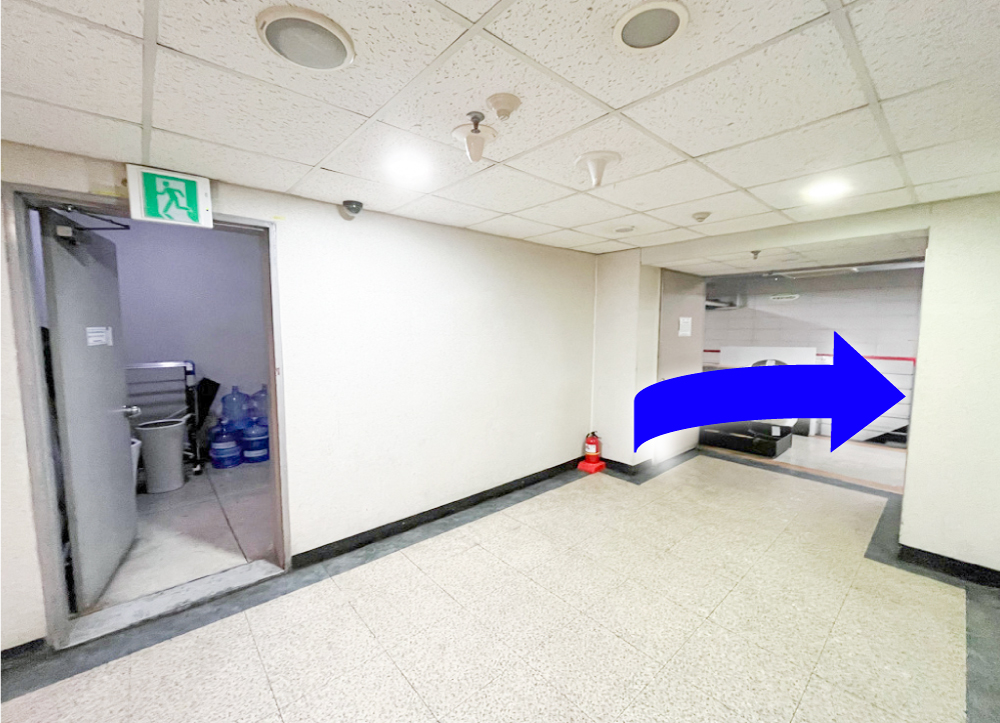

ENGLISH FAQ
01. Oriental tea ceremony
02. How to Use Singing Bowls and Simple Guide Meditation
03. How to use the door lock.
-
1. open the cover

- 2. press the password (The password is shared a day before you enter the room through the Airbnb app message.)
- 3. close the cover to unlock the door
04. How to use tha heating system
-
1. Turn on the heating system by pressing the power button.
- 2. You can choose between B.heating & hot water mode or C. hot water only mode. The icon in the E part shows the current mode status.
05. How to open the front door of the lobby remotely
-
1. You can open the front door of the first floor by pressing buttons A and C in order.

06. How to Use the Projector
-
1. Set the power slide on the back of the projector to ‘on’.

-
2. Press the red lighted power button and wait for about 15 seconds.
(Rotation Switch A can be operated to adjust the focus even while watching.) -
3. Position the projector in the appropriate position on the top of the bed.

-
4. Soon. The noise screen will come up. Press the house-shaped button in the middle of the remote control.

-
5. Various OTT services such as Netflix, Wave, Tving, YouTube, etc. are available.
-
6. Please lie in bed and enjoy the video in a comfortable position.

07. How to use the washing machine
-
1. Please open the detergent inlet at the top left of the washing machine and inject the detergent. Detergent is in the drawer on the left side of the washing machine.
- 2. (Option) If you want to use a fabric softener, please put the fabric softener in inlet 2
- 3. Turn on the washing machine.
- 4. Please set the laundry mode by operating the rotary switch. (Standard washing recommended)
- 5. Press button 5 to start washing.
08. How to use the Bluetooth speaker
-
1. Press the mode button so that the 'BT' (bluetoose) mark is visible in part A.

-
2. Find and pair 'MGTEC Wood Classic' on your smartphone Bluetooth screen and play music on your phone.

09. How to use the microwave
-
1.The strength can be adjusted through the rotary switch A. It is arranged in the order of heat insulation, thawing, weak strength, medium strength, and strong strength from the left. We recommend that you set it to the rightmost ‘strong strength’.
- 2. You can set the operating time through the rotary switch B. The unit is minutes.
10. How to throw away trash
- Please separate the normal waste, recyclable waste, and food waste in the plastic bag on the table. We will dispose of the garbage in the bag, after you leave.
-
but If you want, you can dispose of the garbage directly on the B4 floor

-
go in the direction of the arrow
-
Recyclable trash can be collected separately. Please follow the instructions in the picture above for separate collection.